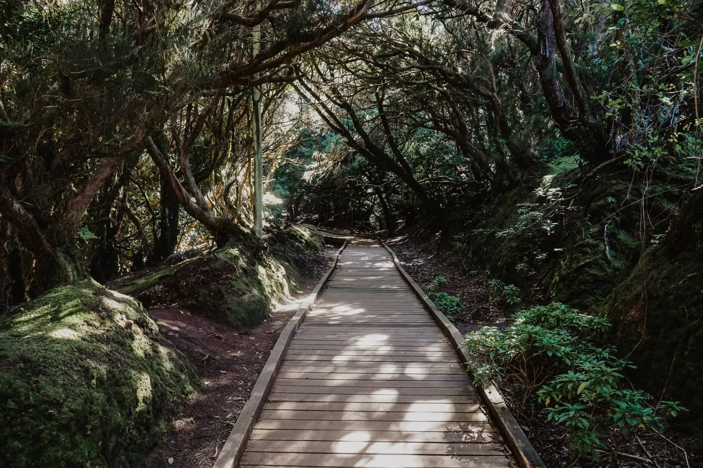

Mis Pasatiempos

Ir al gimnasio
Ir al gimnasio para realizar hipertrofia de cierta manera para mi no es un pasatiempo, es algo que me encanta hacer 5 veces a la semana , llevo 6 años de hacerlo y es una de las mejores decisiones que he tomado para mi salud física y mental.

Caminatas al aire libre
Hacer caminatas al aire libre es un pasatiempo que me libera de todos los problemas y del estrés. Siempre he sido fanatico de la naturaleza y la vegetación. Después de cada semestre siempre realizo una caminata para despejarme.
Ver series y anime